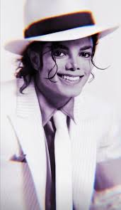

Michael Jackson
1958 - 2009
The King of Pop
Birthname: Michael Joseph Jackson Born] : August 29, 1958(Gary, Indiana, U.S.) Died : June 25, 2009 (aged 50) Ronald Reagan UCLA Medical Center, Los Angeles Occupation:Singer, Dancer, Musician, Music producer, Writer Entertainer,Singer-songwriter,Choreographer, Record producer, Recording artist, Poet, Lyricist, Composer, Arranger, Businessman, Humanitarian, Philanthropist Actor
Biographies
- MJ, was an American singer, songwriter, composer, arranger, record producer, dancer, and philanthropist. Dubbed the "King of Pop", he is regarded as one of the most significant cultural figures of the 20th century as well as one of the most significant musicians of all time. Over a four-decade career, his contributions to music, dance, and fashion made him a global figure in popular culture. Michael influenced artists across many music genres; through stage and video performances, he popularized complicated dance moves such as the Moonwalk, to which he gave the name, as well as the robot.
- His music videos, including those for "Beat It", "Billie Jean", and "Thriller", are credited with breaking racial barriers and transforming the medium into an artform and promotional tool. Outside of music, Michael was respected for his humanitarian work. Michael is the most successful musician from the Jackson family, alongside his sister Janet. The eighth child of Joseph and Katherine Jackson, Michael made his public debut in 1964 with his older brothers Jackie, Tito, Jermaine, and Marlon as a member of the Jackson 5 (later known as the Jacksons when Michael's younger brother Randy joined the group). Between 1972 and 1975, Michael released a total of four solo studio albums with Motown while still a member of the Jackson 5: Got to Be There (1972), Ben (1972), Music & Me (1973) and Forever, Michael (1975). He joined Epic Records in 1975 and became a solo star with his 1979 album Off the Wall, which was a significant departure from Michael's previous work for Motown and was hailed as a major breakthrough for him. The album made Michael the first solo artist to have four singles from the same album reach the top 10 of the U.S. Billboard Hot 100. Retrospective reviews for Off the Wall have hailed it as a landmark release of the disco era.
- Michael achieved the peak of his critical success after the release of his 1982 album Thriller, which became the best-selling album of all time with sales of 70 million copies worldwide, and gave Michael an unprecedented level of cultural significance for a black American, becoming the most popular entertainer in the world in the early and mid-1980s. Thriller also set a record for the most top 10 singles from an album, after all seven of its singles reached the top 10, with "Beat It" and "Billie Jean" reaching number one. Michael's 1987 album Bad, one of the most anticipated albums of its time, was also hugely successful and became the first album to produce five number-one singles. Michael continued his success with the albums Dangerous (1991) and HIStory: Past, Present and Future, Book I (1995). His final studio album, Invincible (2001), was his most critically derided album, although retrospective reviews have been more positive. Outside of music, Michael was respected for his humanitarian work; he was estimated to have donated over $500 million to charity over the course of his life. He received various awards and accolades for his philanthropic work, including two bestowed by US Presidents Ronald Reagan and George H. W. Bush.
- Michael was estimated sales to have sold over 400 million records worldwide. He had 13 Billboard Hot 100 number-one singles (more than any other male artist in the Hot 100 era) and was the first artist to have a top-ten single in the Billboard Hot 100 in five different decades. He is regarded by the RIAA as the highest-selling individual music artist of all time worldwide. Michael is the most awarded musician in history, his honors include 15 Grammy Awards, 6 Brit Awards, a Golden Globe Award, and 39 Guinness World Records, including the "Most Successful Entertainer of All Time". Michael's inductions include the Rock and Roll Hall of Fame (twice), the Vocal Group Hall of Fame, the Songwriters Hall of Fame, the Dance Hall of Fame (the only recording artist to be inducted), and the Rhythm and Blues Music Hall of Fame.